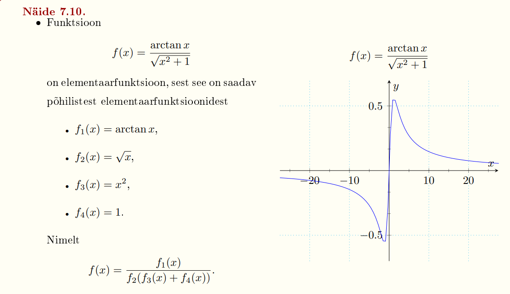
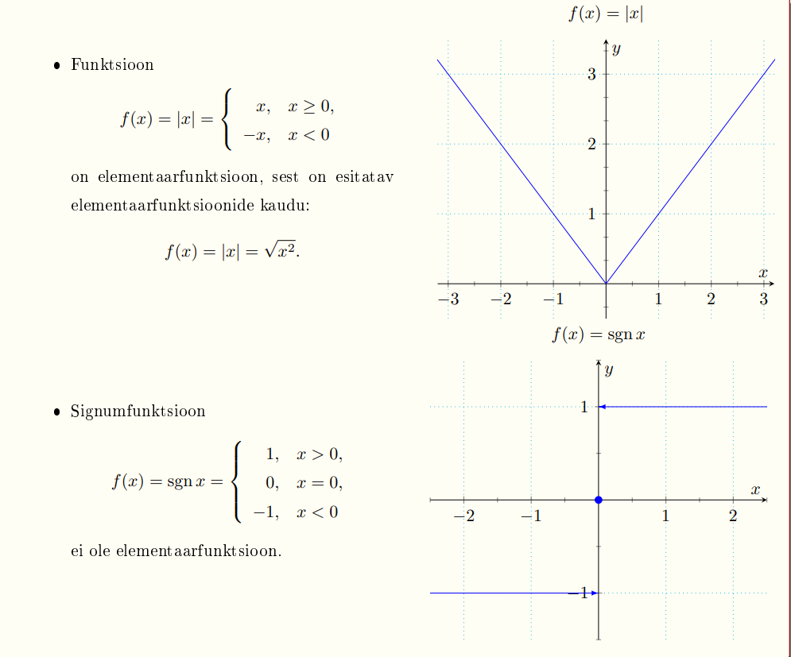

Esileht
1.4 Elementaarfunktsioonid
Elementaarfunktsioonideks nimetatakse funktsioone, mis on saadavad põhilistest elementaarfunktsioonidest lõpliku arvu aritmeetiliste tehete ja liitfunktsiooni moodustamise teel.
 
eelmine teema